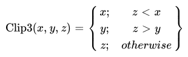
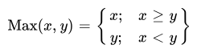
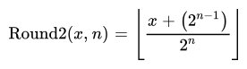
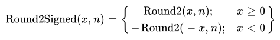

AOMedia Film Grain Synthesis 1 (AFGS1) specification (Draft)
Last modified: 2023-12-11 15:43 PT
Editor
Andrey Norkin (Netflix)
Notice
This is an internal AOMedia working document and not an approved version of the Film grain synthesis specification.
Abstract
This document defines the format, the required parsing and decoding processes, and the processing steps for the standalone Alliance for Open Media film grain synthesis technology. Signaling of the film grain parameters can be done using ITU-T T.35 registered user metadata, which is described in this document.
Contents
- Scope
- Terms and definitions
- Symbols and abbreviated terms
- Conventions
- Syntax structures
- Syntax structures semantics
- Conformance requirements
- Decoding process
- Parsing process
- Additional tables
- Annex A: Matching video decoder profiles and levels
- Bibliography
Scope
This document provides the metadata format and bit-accurate specification for the standalone AOMedia film grain synthesis technology. This technology is based on the film grain modeling process that is specified in the AV1 specification. However, it permits the same model to be applied on other video coding specifications using ITU-T T.35 signaling.
Terms and definitions
For the purposes of this document, the following terms and definitions apply:
- Bitstream
-
The sequence of bits generated by encoding a sequence of frames.
- Bit string
-
An ordered string with a limited number of bits. The left most bit is the most significant bit (MSB) and the right most bit is the least significant bit (LSB).
- Byte
-
An 8-bit bit string.
- Byte alignment
-
One bit, byte, or syntax element is byte aligned if the position of the bit, byte, or syntax element, respectively in the bitstream is an integer multiple of eight from the position of the first bit in the bitstream.
- Chroma
-
A sample value matrix or a single sample value of one of the two color difference signals.
Note: Symbols of chroma are U and V.
- Coded frame
-
The representation of one frame before the decoding process.
- Coded video sequence
-
A coded video sequence is a sequence of access units or temporal units that consists of a random access point, which is followed by zero or more access units or temporal units up to but not including the subsequent random access point.
- Component
-
One of the three sample value matrices (one luma matrix and two chroma matrices) or its single sample value.
- Decoded frame
-
The frame reconstructed out of the bitstream by the decoder.
- Video decoder
-
One embodiment of the video decoding process.
- Video decoding process
-
The process that derives decoded frames from syntax elements, including any processing steps used prior to and generating decoded video frames.
- Film grain decoding process
-
The process that derives film grain parameters from syntax elements, including any processing steps used for the film grain synthesis process.
Film grain synthesis module
ToDo Add a definition of the fgs decoding process and module and adjust the specification text accordingly.
- Encoder
-
One embodiment of the encoding process.
- Encoding process
-
A process not specified in this Specification that generates the bitstream that conforms to the description provided in this document.
ToDo Adjust the definition of the encoding process and its usage in the specification (e.g. a film grain analyzer).
- Flag
-
A binary variable - some variables and syntax elements (e.g. luma_only_grain) are described using the word flag to highlight that the syntax element can only be equal to 0 or equal to 1.
- Frame
-
The representation of video signals in the spatial domain, composed of one luma sample matrix (Y) and two chroma sample matrices (U and V).
- Key frame
-
An Intra frame which resets the decoding process when it is shown.
- Level
-
A defined set of constraints on the values for the syntax elements and variables.
- Luma
-
A sample value matrix or a single sample value representing the monochrome signal related to the primary colors.
Note: The symbol representing luma is Y.
- Parse
-
The procedure of getting the syntax element from the bitstream.
- Profile
-
A subset of syntax, semantics and algorithms defined in a part.
- Raster scan
-
Maps a two dimensional rectangular raster into a one dimensional raster, in which the entry of the one dimensional raster starts from the first row of the two dimensional raster, and the scanning then goes through the second row and the third row, and so on. Each raster row is scanned in left to right order.
- Random Access Point (RAP)
-
A frame, ar which a decoder may start decoding a coded video sequence.
- Reconstruction
-
Obtaining the addition of the decoded residual and the corresponding prediction values.
AMT: # (I would assume that here we reconstruct noise and we add it on the images. There is no residual. Correct? We likely need to redefine this term for this document assuming it is needed. Same for other terms in this document, such as “reference”) ToDo Clean-up the reconstruction usage in this specification.
- Reference
-
One of a set of tags, each of which is mapped to a reference frame.
- Reserved
-
A special syntax element value which may be used to extend this part in the future.
- Sample
-
The basic elements that compose the frame.
- Sample value
-
The value of a sample. This is an number in the range from the minimum sample value to the maximum sample value.
ToDo Check if the reference synthesis process supports the bit depths outside of the 8 to 12 bit range.
- Sequence
-
The highest level syntax structure of coding bitstream, including one or several consecutive coded frames.
- Syntax element
-
An element of data represented in the bitstream.
Symbols and abbreviated terms
- LSB
-
Least Significant Bit
- MSB
-
Most Significant Bit
Conventions
General
The mathematical operators and their precedence rules used to describe this Specification are similar to those used in the C programming language. However, the operation of integer division with truncation is specifically defined.
When a variable is said to be representable by a signed integer with x bits,
it means that the variable is greater than or equal to -(1 << (x-1)), and that
the variable is less than or equal to (1 << (x-1))-1.
The key words “must”, “must not”, “required”, “shall”, “shall not”, “should”, “should not”, “recommended”, “may”, and “optional” in this document are to be interpreted as described in RFC 2119.
Arithmetic operators
| + | Addition |
| – | Subtraction (as a binary operator) or negation (as a unary prefix operator) |
| * | Multiplication |
| / | Integer division with truncation of the result toward zero. For example, 7/4 and -7/-4 are truncated to 1 and -7/4 and 7/-4 are truncated to -1. |
| a % b | Remainder from division of a by b. Both a and b are positive integers. |
| ÷ | Floating point (arithmetical) division. |
| ceil(x) | The smallest integer that is greater or equal than x. |
| floor(x) | The largest integer that is smaller or equal than x. |
Logical operators
| a && b | Logical AND operation between a and b |
| a || b | Logical OR operation between a and b |
| ! | Logical NOT operation. |
Relational operators
| > | Greater than |
| >= | Greater than or equal to |
| < | Less than |
| <= | Less than or equal to |
| == | Equal to |
| != | Not equal to |
Bitwise operators
| & | AND operation |
| | | OR operation |
| ^ | XOR operation |
| ~ | Negation operation |
| a >> b | Shift a in 2’s complement binary integer representation format to the right by b bit positions. This operator is only used with b being a non-negative integer. Bits shifted into the MSBs as a result of the right shift have a value equal to the MSB of a prior to the shift operation. |
| a << b | Shift a in 2’s complement binary integer representation format to the left by b bit positions. This operator is only used with b being a non-negative integer. Bits shifted into the LSBs as a result of the left shift have a value equal to 0. |
Assignment
| = | Assignment operator |
| ++ | Increment, x++ is equivalent to x = x + 1. When this operator is used for an array index, the variable value is obtained before the auto increment operation |
| - - | Decrement, i.e. x-- is equivalent to x = x - 1. When this operator is used for an array index, the variable value is obtained before the auto decrement operation |
| += | Addition assignment operator, for example x += 3 corresponds to x = x + 3 |
| -= | Subtraction assignment operator, for example x -= 3 corresponds to x = x - 3 |
Mathematical functions
The following mathematical functions (Abs, Clip3, Clip1, Min, Max, Round2 and Round2Signed) are defined as follows:







The definition of Round2 uses standard mathematical power and division operations, not integer operations. An equivalent definition using integer operations is:
Round2( x, n ) {
if ( n == 0 )
return x
return ( x + ( 1 << (n - 1) ) ) >> n
}
The FloorLog2(x) function is defined to be the floor of the base 2 logarithm of the input x.
The input x will always be an integer, and will always be greater than or equal to 1.
This function extracts the location of the most significant bit in x.
An equivalent definition (using the pseudo-code notation introduced in the following section) is:
FloorLog2( x ) {
s = 0
while ( x != 0 ) {
x = x >> 1
s++
}
return s - 1
}
The CeilLog2(x) function is defined to be the ceiling of the base 2 logarithm of the input x (when x is 0, it is defined to return 0).
The input x will always be an integer, and will always be greater than or equal to 0.
This function extracts the number of bits needed to code a value in the range 0 to x-1.
An equivalent definition (using the pseudo-code notation introduced in the following section) is:
CeilLog2( x ) {
if ( x < 2 )
return 0
i = 1
p = 2
while ( p < x ) {
i++
p = p << 1
}
return i
}
Method of describing bitstream syntax
The description style of the syntax is similar to the C programming language. Syntax elements in the bitstream are represented in bold type. Each syntax element is described by its name (using only lower case letters with underscore characters) and a descriptor for its method of coded representation. The decoding process behaves according to the value of the syntax element and to the values of previously decoded syntax elements. When a value of a syntax element is used in the syntax tables or the text, it appears in regular (i.e. not bold) type. If the value of a syntax element is being computed (e.g. being written with a default value instead of being coded in the bitstream), it also appears in regular type (e.g. tile_size_minus_1).
In some cases the syntax tables may use the values of other variables derived from syntax elements values. Such variables appear in the syntax tables, or text, named by a mixture of lower case and upper case letter and without any underscore characters. Variables starting with an upper case letter are derived for the decoding of the current syntax structure and all depending syntax structures. These variables may be used in the decoding process for later syntax structures. Variables starting with a lower case letter are only used within the process from which they are derived. (Single character variables are allowed.)
Constant values appear in all upper case letters with underscore characters (e.g. MI_SIZE).
Constant lookup tables appear as words (with the first letter of each word in upper case, and remaining letters in lower case) separated with underscore characters (e.g. Block_Width[…]).
Hexadecimal notation, indicated by prefixing the hexadecimal number by 0x,
may be used when the number of bits is an integer multiple of 4. For example,
0x1a represents a bit string 0001 1010.
Binary notation is indicated by prefixing the binary number by 0b. For
example, 0b00011010 represents a bit string 0001 1010. Binary numbers may
include underscore characters to enhance readability. If present, the
underscore characters appear every 4 binary digits starting from the LSB. For
example, 0b11010 may also be written as 0b1_1010.
A value equal to 0 represents a FALSE condition in a test statement. The value TRUE is represented by any value not equal to 0.
The following table lists examples of the syntax specification format. When
syntax_element appears (with bold face font), it specifies that this syntax
element is parsed from the bitstream.
| Type | |
| /* A statement can be a syntax element with associated | |
| descriptor or can be an expression used to specify its | |
| existence, type, and value, as in the following | |
| examples */ | |
| syntax_element | f(1) |
| /* A group of statements enclosed in brackets is a | |
| compound statement and is treated functionally as a single | |
| statement. */ | |
| { | |
| statement | |
| … | |
| } | |
| /* A “while” structure specifies that the statement is | |
| to be evaluated repeatedly while the condition remains | |
| true. */ | |
| while ( condition ) | |
| statement | |
| /* A “do .. while” structure executes the statement once, | |
| and then tests the condition. It repeatedly evaluates the | |
| statement while the condition remains true. */ | |
| do | |
| statement | |
| while ( condition ) | |
| /* An “if .. else” structure tests the condition first. If | |
| it is true, the primary statement is evaluated. Otherwise, | |
| the alternative statement is evaluated. If the alternative | |
| statement is unnecessary to be evaluated, the “else” and | |
| corresponding alternative statement can be omitted. */ | |
| if ( condition ) | |
| primary statement | |
| else | |
| alternative statement | |
| /* A “for” structure evaluates the initial statement at the | |
| beginning then tests the condition. If it is true, the primary | |
| and subsequent statements are evaluated until the condition | |
| becomes false. */ | |
| for ( initial statement; condition; subsequent statement ) | |
| primary statement | |
| /* The return statement in a syntax structure specifies | |
| that the parsing of the syntax structure will be terminated | |
| without processing any additional information after this stage. | |
| When a value immediately follows a return statement, this value | |
| shall also be returned as the output of this syntax structure. */ | |
| return x |
Functions
Bitstream functions used for syntax description are specified in this section.
Other functions are included in the syntax tables. The convention is that a section is called syntax if it causes syntax elements to be read from the bitstream, either directly or indirectly through subprocesses. The remaining sections are called functions.
Descriptors
f(n)
Unsigned n-bit number appearing directly in the bitstream. The bits are read from high to low order. The parsing process specified in section 8.1 is invoked and the syntax element is set equal to the return value.
Syntax structures
General
This section presents the syntax structures in a tabular form. The meaning of each of the syntax elements is presented in Section 6.
AOMedia ITU-T T.35 metadata syntax
| metadata_itut_t35( ) { | Type |
| itu_t_t35_country_code | f(8) |
| if ( itu_t_t35_country_code == 0xB5 ) { | |
| itu_t_t35_terminal_provider_code | f(16) |
| if ( itu_t_t35_terminal_provider_code == 0x5890 ) { | |
| aom_itu_t_t35_payload() | |
| } | |
| } |
Note: The syntax above represents signaling of ITU-T T.35 metadata reserved for AOMedia and not general ITU-T T.35 syntax.
Note: The last byte of the valid content of the data is considered to be the last byte that is not equal to zero. This rule is to prevent the dropping of valid bytes by systems that interpret trailing zero bytes as a padding continuation of the trailing bits. This implies that when any payload data is present, at least one byte of the payload data (including the trailing bit) shall not be equal to 0.
AOMedia ITU-T T.35 payload syntax
| aom_itu_t_t35_payload( ) { | Type |
| itu_t_t35_terminal_provider_oriented_code | f(16) |
| if ( itu_t_t35_terminal_provider_oriented_code == 0x0001 ) { | |
| av1_film_grain_param_sets( ) | |
| } | |
| } |
Note: This specification only provides the value of the itu_t_t35_terminal_provider_oriented_code that identifies the av1 film grain parameters metadata. The complete syntax of aom_itu_t_t35_payload( ) and the list of values for AOMedia itu_t_t35_terminal_provider_oriented_code are defined in the AOMedia metadata registry specification.
Film grain parameter sets syntax
| av1_film_grain_param_sets( ) { | Type |
| num_film_grain_sets_minus1 | f(3) |
| for ( i = 0; i < num_film_grain_sets_minus1 + 1; i++ ) { | |
| av1_film_grain_params( ) | |
| } | |
| film_grain_param_set_idx = select_film_grain_param_set() | |
| load_grain_params(film_grain_param_set_idx) | |
| } |
Film grain parameters syntax
| av1_film_grain_params( ) { | Type |
| apply_grain | f(1) |
| if ( !apply_grain ) { | |
| reset_grain_params() | |
| return | |
| } | |
| grain_seed | f(16) |
| film_grain_param_set_idx | f(3) |
| update_grain | f(1) |
| if ( !update_grain ) { | |
| tempGrainSeed = grain_seed | |
| load_grain_params( film_grain_param_set_idx ) | |
| grain_seed = tempGrainSeed | |
| return | |
| } | |
| apply_units_resolution_log2 | f(4) |
| apply_horz_resolution | f(12) |
| apply_vert_resolution | f(12) |
| video_frame_characteristics_flag | f(1) |
| if (video_frame_characteristics_flag) | |
| bit_depth | f(3) |
| BitDepth = bit_depth + 8 | |
| mono_chrome | f(1) |
| SubX = SubY = 0 | |
| if ( !mono_chrome ) { | |
| subsampling_x | f(1) |
| SubX = subsampling_x | |
| subsampling_y | f(1) |
| SubY = subsampling_y | |
| } | |
| } | |
| predict_scaling | f(1) |
| if (predict_scaling) { | |
| film_grain_param_set_idx_for_prediction | f(3) |
| predict_y_scaling | f(1) |
| } else | |
| predict_y_scaling = 0 | |
| if (predict_y_scaling) { | |
| y_scaling_mult | f(9) |
| y_scaling_add | f(9) |
| num_y_points_in_ref | f(4) |
| bits_per_y_scaling_res | f(3) |
| BitsRes = bits_per_y_scaling_res | |
| if (bits_per_y_scaling_res) { | |
| for ( i = 0; i < num_y_points_in_ref; i++ ) | |
| point_y_scaling_res[ i ] | f(BitsRes) |
| y_scaling_res_granularity | f(3) |
| } | |
| } else { | |
| num_y_points | f(4) |
| point_y_value_increment_bits_minus1 | f(3) |
| BitsIncr = point_y_value_increment_bits_minus1 + 1 | |
| point_y_value[ -1 ] = 0 | |
| point_y_scaling_bits_minus5 | f(2) |
| BitsScal = point_y_scaling_bits_minus5 + 5 | |
| for ( i = 0; i < num_y_points; i++ ) { | |
| point_y_value_increment[ i ] | f(BitsIncr) |
| point_y_scaling[ i ] | f(BitsScal) |
| } | |
| } | |
| luma_only_grain | f(1) |
| if ( luma_only_grain ) { | |
| chroma_scaling_from_luma = 0 | |
| } else { | |
| chroma_scaling_from_luma | f(1) |
| } | |
| if ( luma_only_grain || chroma_scaling_from_luma ) { | |
| num_cb_points = 0 | |
| num_cr_points = 0 | |
| } else { | |
| if (predict_scaling) { | |
| predict_cb_scaling | f(1) |
| } else | |
| predict_cb_scaling = 0 | |
| if (predict_cb_scaling) { | |
| cb_scaling_mult | f(9) |
| cb_scaling_add | f(9) |
| num_cb_points_in_ref | f(4) |
| bits_per_cb_scaling_res | f(3) |
| BitsRes = bits_per_cb_scaling_res | |
| if (bits_per_cb_scaling_res) { | |
| for ( i = 0; i < num_cb_points_in_ref; i++ ) | |
| point_cb_scaling_res[ i ] | f(BitsRes) |
| cb_scaling_res_granularity | f(3) |
| } | |
| } else { | |
| num_cb_points | f(4) |
| point_cb_value_increment_bits_minus1 | f(3) |
| BitsIncr = point_cb_value_increment_bits_minus1 + 1 | |
| point_cb_value[ -1 ] = 0 | |
| point_cb_scaling_bits_minus5 | f(2) |
| BitsScal = point_cb_scaling_bits_minus5 + 5 | |
| cb_scaling_offset | f(8) |
| for ( i = 0; i < num_cb_points; i++ ) { | |
| point_cb_value_increment[ i ] | f(BitsIncr) |
| point_cb_scaling[ i ] | f(BitsScal) |
| } | |
| } | |
| if (predict_scaling) { | |
| predict_cr_scaling | f(1) |
| } else | |
| predict_cr_scaling = 0 | |
| if (predict_cr_scaling) { | |
| cr_scaling_mult | f(9) |
| cr_scaling_add | f(9) |
| num_cr_points_in_ref | f(4) |
| bits_per_cr_scaling_res | f(3) |
| BitsRes = bits_per_cr_scaling_res | |
| if (bits_per_cr_scaling_res) { | |
| for ( i = 0; i < num_cr_points_in_ref; i++ ) | |
| point_cr_scaling_res[ i ] | f(BitsRes) |
| cr_scaling_res_granularity | f(3) |
| } | |
| } else { | |
| num_cr_points | f(4) |
| point_cr_value_increment_bits_minus1 | f(3) |
| BitsIncr = point_cr_value_increment_bits_minus1 + 1 | |
| point_cr_value[ -1 ] = 0 | |
| point_cr_scaling_bits_minus5 | f(2) |
| BitsScal = point_cr_scaling_bits_minus5 + 5 | |
| cr_scaling_offset | f(8) |
| for ( i = 0; i < num_cr_points; i++ ) { | |
| point_cr_value_increment[ i ] | f(BitsIncr) |
| point_cr_scaling[ i ] | f(BitsScal) |
| } | |
| } | |
| } | |
| grain_scaling_minus_8 | f(2) |
| ar_coeff_lag | f(2) |
| numPosLuma = 2 * ar_coeff_lag * ( ar_coeff_lag + 1 ) | |
| bits_per_ar_coeff_y_minus5 | f(2) |
| BitsArY = bits_per_ar_coeff_y_minus5 + 5 | |
| if ( num_y_points || predict_y_scaling ) { | |
| numPosChroma = numPosLuma + 1 | |
| for ( i = 0; i < numPosLuma; i++ ) | |
| ar_coeffs_y[ i ] | f(BitsArY) |
| } else { | |
| numPosChroma = numPosLuma | |
| } | |
| if ( chroma_scaling_from_luma || num_cb_points || predict_cb_scaling ) { | |
| bits_per_ar_coeff_cb_minus5 | f(2) |
| BitsArCb = bits_per_ar_coeff_cb_minus5 + 5 | |
| for ( i = 0; i < numPosChroma; i++ ) | |
| ar_coeffs_cb[ i ] | f(BitsArCb) |
| } | |
| if ( chroma_scaling_from_luma || num_cr_points || predict_cr_scaling ) { | |
| bits_per_ar_coeff_cr_minus5 | f(2) |
| BitsArCr = bits_per_ar_coeff_cr_minus5 + 5 | |
| for ( i = 0; i < numPosChroma; i++ ) | |
| ar_coeffs_cr[ i ] | f(BitsArCr) |
| } | |
| ar_coeff_shift_minus_6 | f(2) |
| grain_scale_shift | f(2) |
| if ( num_cb_points ) { | |
| cb_mult | f(8) |
| cb_luma_mult | f(8) |
| cb_offset | f(9) |
| } | |
| if ( num_cr_points ) { | |
| cr_mult | f(8) |
| cr_luma_mult | f(8) |
| cr_offset | f(9) |
| } | |
| overlap_flag | f(1) |
| clip_to_restricted_range | f(1) |
| save_grain_params( film_grain_param_set_idx ) | |
| } |
Syntax structures semantics
General
This section specifies the meaning of the syntax elements read in the syntax structures.
Important variables and function calls are also described.
AOMedia ITU-T T.35 metadata semantics
itu_t_t35_country_code is a syntax element that corresponds to the syntax element itu_t_t35_terminal_provider_code in an ITU-T T.35 user registered metadata syntax. Its value shall be equal to 0xB5, which indicates that the itu_t_t35_terminal_provider_code is registered in the United States.
itu_t_t35_terminal_provider_code are two bytes having values specified as a terminal provider code in reference name required. itu_t_t35_terminal_provider_code equal to 0x5890 indicates that the ITU-T T.35 payload is specified by AOMedia.
AOMedia ITU-T T.35 payload semantics
itu_t_t35_terminal_provider_oriented_code provides the value of the ITU-T T.35 terminal provider oriented code that is defined in the AOMedia metadata registry specification. itu_t_t35_terminal_provider_oriented_code equal to 0x0001 indicates that the ITU-T T.35 payload contains AOMedia film grain parameters, as defined by this specification.
Film grain parameter sets semantics
num_film_grain_sets_minus1 plus 1 specifies the number of signaled film grain parameter sets.
select_film_grain_param_set() is a function call that returns the index of the film grain parameter set signaled in the current av1_film_grain_param_sets function that is most appropriate for the current decoder configuration.
Note: It is recommended that the most appropriate film grain parameter set is the film grain parameter set having the largest spatial resolution that is both supported by the film grain synthesis process of the decoder and is less than or equal to the intended display resolution.
load_grain_params( idx ) is a function call that indicates that all the syntax elements in av1_film_grain_params should be set equal to the values stored in an area of memory used by the idx.
Conformance
Conformance to this specification requires that all requirements specified in this section be fulfilled.
For a given decoded picture, there shall not be more than one film grain parameter set for a given combination of luma horizontal and luma vertical resolution.
For a given decoded picture, if film grain parameter sets are associated with this picture, one film grain parameter set with apply_horz_resolution and apply_vert_resolution respectively equal to (i) the horizontal resolution of the coded frame » apply_units_resolution_log2 and (ii) the vertical resolution of the coded frame » apply_units_resolution_log2 shall be provided.
For a given decoded picture, there shall not be more than one film grain parameter set with the same film_grain_param_set_idx value.
Note: The conformance statements above mean that if film grain parameter sets are associated with a decoded picture, there must be one film grain parameter set that corresponds to the decoded picture resolution, there shall not be more than one film grain parameter set that correspond to the same resolution, and film grain parameter sets related to the same decoded picture shall each use a unique of film_grain_param_set_idx.
Film grain parameters semantics
This metadata provides the post-processing module with a model for parameterized film grain synthesis. The film grain process is applied to frames output by a video decoder or a video post-processing module. The film grain synthesis shall be applied at the decoder output resolution.
Note: An encoder may use this film grain metadata to characterize film grain that was present in the original source video material and was removed by pre-processing filtering techniques. The specified film grain parameters and the post-processing algorithm are equivalent to the AV1 film grain synthesis at the frame level.
The film grain parameters signaled in this metadata message are applied to the output video frame that is associated with the coded video frame that follows the current metadata message in the encoded video bitstream.
Note: When coding the film grain parameters in this metadata message, the encoder should consider the scalability layers structure of the bitstream. In particular, the metadata assosiated with lower scalability layers should not refer to the film grain parameters associated with higher scalability layers.
Note: In case of the update_grain equal to 0, the film grain synthesis module should use the parameters from the previous frame in the display order and not the coding order.
apply_grain equal to 1 specifies that film grain should be added to this frame. apply_grain equal to 0 specifies that film grain should not be added.
reset_grain_params( ) is a function call that indicates that all the syntax elements read in film_grain_params should be set equal to 0.
grain_seed specifies the starting value for the pseudo-random numbers used during film grain synthesis.
film_grain_param_set_idx is an index of a film grain parameter set. Up to 8 separate film grain parameter sets may be simultaneously stored by the film grain processing module.
Note: An encoder may use film_grain_param_set_idx to differentiate between up to 8 separate film grain models. For example, in the case of varying output frame resolutions, an encoder may assign different film_grain_param_set_idx to film grain parameters that are used with frames with different output resolutions.
update_grain equal to 1 means that a new set of parameters is sent. update_grain equal to 0 means that the previous set of parameters in the frame display order should be used.
It is a requirement of bitstream conformance that for every distinct value of film_grain_param_set_idx used in a coded video sequence, the first frame in the display order with that value of film_grain_param_set_idx that has apply_grain flag equal to 1 have update_grain equal to 1.
Note: This requirement means that film grain parameters associated with a particular film_grain_param_set_idx value can only be infered from previously signaled parameters in the display order with the same value of film_grain_param_set_idx in the current coded video sequence.
tempGrainSeed is a temporary variable that is used to avoid losing the value of grain_seed when load_grain_params is called. When update_grain is equal to 0, a previous set of parameters should be used for everything except grain_seed.
apply_units_resolution_log2 indicates the units used for indicating apply_horz_resolution and apply_vert_resolution.
apply_vert_resolution indicates the luma vertical resolution corresponding to the film grain synthesis parameters in units of 1 « apply_units_resolution_log2 luma samples.
apply_horz_resolution indicates the luma horizontal resolution corresponding to the film grain synthesis parameters in units of 1 « apply_units_resolution_log2 luma samples.
[Ed.note. It is intended to recommend for the encoders to put the FGS parameters corresponding to the decoded picture resolution into the metadata.]
video_frame_characteristics_flag equal to 1 indicates that the syntax elements bit_depth, mono_chrome, subsampling_x, subsampling_y are signaled in this metadata message. video_frame_characteristics_flag equal to 0 indicates that the syntax elements bit_depth, mono_chrome, subsampling_x, subsampling_y are not signal in this metadata message. If video_frame_characteristics_flag equal to 0, variables BitDepth, mono_chrome, SubX, and SubY are derived from the decoded video frame, to which this metadata message belongs.
bit_depth is a syntax element which determines bit depth of the decoded video sequence or a decoded video frame, to which this metadata belongs to.
mono_chrome equal to 1 indicates that the video does not contain U and V color planes. mono_chrome equal to 0 indicates that the video contains Y, U, and V color planes.
subsampling_x, subsampling_y specify the chroma subsampling format:
| subsampling_x | subsampling_y | mono_chrome | Description |
|---|---|---|---|
| 0 | 0 | 0 | YUV 4:4:4 |
| 1 | 0 | 0 | YUV 4:2:2 |
| 1 | 1 | 0 | YUV 4:2:0 |
| 1 | 1 | 1 | Monochrome 4:0:0 |
predict_scaling equal to 0 specifies that scaling functions in the current film grain parameter set are not predicted from scaling functions that belong to other film grain parameters sets. predict_scaling equal to 1 specifies that scaling functions in the current film grain parameter set may be predicted from scaling functions that belong to other film grain parameters sets.
It is a requirement of the specification conformance that the film grain parameters set at the decoded picture resolution have the predict_scaling flag equal to zero.
film_grain_param_set_idx_for_prediction specifies an index of a film grain parameter set that is used for prediction of scaling functions of the current film grain parameter set.
It is a requirement of the conformance to the current specification that the values of the film grain parameter set with index film_grain_param_set_idx_for_prediction has been initialized with values of the scaling functions that in the current coded video sequence.
predict_y_scaling equal to 0 indicates that the luma scaling functions in the current film grain parameter set are not predicted from a different film grain parameter set. predict_y_scaling equal to 1 indicates that the luma scaling functions in the current film grain parameter set are predicted from a different film grain parameter set indicated by film_grain_param_set_idx_for_prediction.
y_scaling_mult specifies a multiplier used for predicting the luma film grain scaling function.
y_scaling_add specifies an addition / intercept parameter used for predicting the luma film grain scaling function.
num_y_points_in_ref specifies the number of points for the piecewise linear scaling function of the luma component in the film grain parameter set referenced with film_grain_param_set_idx_for_prediction.
bits_per_y_scaling_res specifies the number of bits used for encoding of differences / residuals for point_y_scaling.
point_y_scaling_res[ i ] specifies the prediction difference of the parameters. The parameter is signaled using bits_per_y_scaling_res bits and is in the [-2 bits_per_y_value_res-1, 2bits_per_y_value_res-1-1] range.
y_scaling_res_granularity specifies the granularity with which the difference values for the predicted scaling function are encoded.
When predict_y_scaling parameters is equal to 1, the luma scaling function values are derived as follows
It is a requirement of the specification conformance that parameter num_y_points_in_ref is set equal to the parameters num_y_points in the film grain parameters set film_grain_param_set_idx_for_prediction. Values point_y_value_ref [i] are equal to point_y_value [i] in the film grain parameters set film_grain_param_set_idx_for_prediction. Values of point_y_scaling_ref [i] are equal to point_y_scaling [i] in the film grain parameters set film_grain_param_set_idx_for_prediction.
for ( i = 0; i < num_y_points; i++ ) {
point_y_value[ i ] = point_y_value_ref[ i ]
point_y_scaling[ i ] =
Clip3(0, 255, ( (point_y_scaling_ref[ i ] * (y_scaling_mult - 256) + 8) >> 4) + luma_scaling_add - 256
+ (point_y_scaling_res[ i ] - ( 1 << (bits_per_y_scaling_res-1) ) )* y_scaling_res_granularity )
}
Note: y_scaling_mult represents a value of multiplier from -16 to +15.9375 with granularity of values of 1/16. luma_scaling_add represents an integer value of intercept in the range between [ - 256, 255].
num_y_points specifies the number of points for the piece-wise linear scaling function of the luma component.
It is a requirement of bitstream conformance that num_y_points is less than or equal to 14. AMT: # (Why need to talk about conformance? Why also restrict the value to up to 14? Same for chroma)
point_y_value_increment_bits_minus1 specifies the number of bits minus 1 that will be spent on signaling the increments of point_y_values.
point_y_scaling_bits_minus5 specifies the number of bits minus 5 that will be spent on signaling point_y_scaling[ i ].
point_y_value_increment[ i ] is the increment of point_y_value [ i ] relative to the point_y_value [ i - 1 ]. point_y_value[ i ] represents the x (luma value) coordinate for the i-th point of the piecewise linear scaling function for the luma component. The values are signaled on the scale of 0..255. (In case of 10-bit video, these values correspond to luma values divided by 4. In case of 12-bit video, these values correspond to luma values divided by 16.)
The values of point_y_value[ i ] are obtained as follows.
point_y_value[ -1 ] = 0
for ( i = 0; i < num_y_points; i++ )
point_y_value[ i ] = point_y_value[ i - 1 ] + point_y_value_increment[ i ].
point_y_value[ i ] represents the x (luma value) coordinate for the i-th point of the piecewise linear scaling function for luma component. The values are signaled on the scale of 0..255. (In case of 10 bit video, these values correspond to luma values divided by 4. In case of 12 bit video, these values correspond to luma values divided by 16.)
If i is greater than 0, it is a requirement of bitstream conformance that point_y_value[ i ] is greater than point_y_value[ i - 1 ] (this ensures the x coordinates are specified in increasing order).
point_y_scaling[ i ] represents the scaling (output) value for the i-th point of the piecewise linear scaling function for luma component.
luma_only_grain equal to 1 indicates that the film grain synthesis process is only applied to the luma component. luma_only_grain equal to 0 indicates that the film grain synthesis process can be applied to the chroma components.
It is a requirement of bitstream conformance that when the reconstructed video is monochrome, luma_only_grain is equal to 1. AMT: # (Why need to talk about conformance? Also it seems not so important to force the value for mono)
chroma_scaling_from_luma equal to 1 specifies that the chroma scaling is inferred from the luma scaling. chroma_scaling_from_luma equal to 0 specifies that the chroma scaling is signaled independently.
predict_cb_scaling equal to 0 indicates that the Cb scaling functions in the current film grain parameter set are not predicted from a different film grain parameter set. predict_cb_scaling equal to 1 indicates that the Cb scaling functions in the current film grain parameter set are predicted from a film grain parameter set indicated by film_grain_param_set_idx_for_prediction.
If predict_cb_scaling is equal to 1, variables cb_mult, cb_luma_mult, and cb_offset are set equal to variables cb_mult, cb_luma_mult, and cb_offset in the film grain parameter set indicated by film_grain_param_set_idx_for_prediction.
cb_scaling_mult specifies a multiplier used for predicting the Cb film grain scaling function.
cb_scaling_add specifies an addition / intercept parameter used for predicting the Cb film grain scaling function.
num_cb_points_in_ref specifies the number of points for the piecewise linear scaling function of the luma component in the film grain parameter set referenced with film_grain_param_set_idx_for_prediction.
bits_per_cb_scaling_res specifies the number of bits used for encoding of differences / residuals for point_cb_scaling.
point_cb_scaling_res[ i ] specifies the prediction difference of the parameters. The parameter is signaled using bits_per_cb_scaling_res bits and is in the [-2 bits_per_cb_value_res-1, 2bits_per_cb_value_res-1-1] range.
cb_scaling_res_granularity specifies the granularity with which the difference values for the predicted scaling function are encoded.
When predict_cb_scaling parameters is equal to 1, the Cb scaling function values are derived as follows
It is a requirement of the specification conformance that parameter num_cb_points_in_ref is set equal to num_cb_points in the film grain parameters set film_grain_param_set_idx_for_prediction. Values point_cb_value_ref[ i ] are equal to point_cb_value[ i ] in the film grain parameters set film_grain_param_set_idx_for_prediction. Values of point_cb_scaling_ref[ i ] are equal to point_cb_scaling[ i ] in the film grain parameters set film_grain_param_set_idx_for_prediction.
for ( i = 0; i < num_cb_points; i++ ) {
point_cb_value[ i ] = point_cb_value_ref[ i ]
point_cb_scaling[ i ] =
Clip3(0, 255, ( (point_cb_scaling_ref[ i ] * (cb_scaling_mult - 256) + 8) >> 4) + cb_scaling_add - 256
+ (point_cb_scaling_res[ i ] - ( 1 << (bits_per_cb_scaling_res-1) ) ) * cb_scaling_res_granularity)
}
Note: cb_scaling_mult represents a value of multiplier from -16 to +15.9375 with granularity of values of 1/16. cb_scaling_add represents an integer value of intercept in the range between [ - 256, 255].
num_cb_points specifies the number of points for the piece-wise linear scaling function of the cb component.
It is a requirement of bitstream conformance that num_cb_points is less than or equal to 10.
Note: When chroma_scaling_from_luma is equal to 1, it is still allowed for num_y_points to take values up to 14. This means that the chroma scaling also needs to support up to 14 points.
point_cb_value_increment_bits_minus1 specifies the number of bits minus 1 that will be spent on signaling the increments of point_cb_values.
point_cb_scaling_bits_minus5 specifies the number of bits minus 5 that will be spent on signaling point_cb_scaling[ i ]
cb_scaling_offset specifies the offset applied to obtain point_cb_scaling[ i ] values.
point_cb_value_increment[ i ] is the increment of point_cb_value [ i ] relative to the point_cb_value [ i - 1 ].
point_cb_value[ i ] represents the x coordinate for the i-th point of the piece-wise linear scaling function for cb component. The values are signaled on the scale of 0..255.
The values of point_cb_value[ i ] are obtained as follows.
point_cb_value[ -1 ] = 0
for ( i = 0; i < num_cb_points; i++ )
point_cb_value[ i ] = point_cb_value[ i - 1 ] + point_cb_value_increment[ i ].
point_cb_scaling[ i ] represents the scaling (output) value for the i-th point of the piecewise linear scaling function for cb component.
The values of point_cb_scaling[ i ] are obtained as follows.
for ( i = 0; i < num_cb_points; i++ )
point_cb_scaling[ i ] = point_cb_scaling[ i ] + cb_scaling_offset.
predict_cr_scaling equal to 0 indicates that the Cr scaling functions in the current film grain parameter set are not predicted from a different film grain parameter set. predict_cr_scaling equal to 1 indicates that the Cr scaling functions in the current film grain parameter set are predicted from a film grain parameter set indicated by film_grain_param_set_idx_for_prediction.
If predict_cr_scaling is equal to 1, variables cr_mult, cr_luma_mult, and cr_offset are set equal to variables cr_mult, cr_luma_mult, and cr_offset in the film grain parameter set indicated by film_grain_param_set_idx_for_prediction.
cr_scaling_mult specifies a multiplier used for predicting the Cr film grain scaling function.
cr_scaling_add specifies an addition / intercept parameter used for predicting the Cr film grain scaling function.
num_cr_points_in_ref specifies the number of points for the piecewise linear scaling function of the luma component in the film grain parameter set referenced with film_grain_param_set_idx_for_prediction.
bits_per_cr_scaling_res specifies the number of bits used for encoding of differences / residuals for point_cb_scaling.
point_cr_scaling_res[ i ] specifies the prediction difference of the parameters. The parameter is signaled using bits_per_cb_scaling_res bits and is in the [-2 bits_per_cr_value_res-1, 2bits_per_cr_value_res-1-1] range.
cr_scaling_res_granularity specifies the granularity with which the difference values for the predicted scaling function are encoded.
When predict_cr_scaling parameters is equal to 1, the Cr scaling function values are derived as follows
It is a requirement of the specification conformance that parameter num_cr_points_in_ref is set equal to num_cr_points in the film grain parameters set film_grain_param_set_idx_for_prediction. Values point_cr_value_ref [i] are equal to point_cr_value [i] in the film grain parameters set film_grain_param_set_idx_for_prediction. Values of point_cr_scaling_ref [i] are equal to point_cr_scaling [i] in the film grain parameters set film_grain_param_set_idx_for_prediction.
for ( i = 0; i < num_cr_points_in_ref; i++ ) {
point_cr_value[ i ] = point_cr_value_ref[ i ]
point_cr_scaling[ i ] =
Clip3(0, 255, ( (point_cr_scaling_ref[ i ] * (cr_scaling_mult - 256) + 8) >> 4) + cr_scaling_add - 256
+ (point_cr_scaling_res[ i ] - ( 1 << (bits_per_cr_scaling_res-1) )) * cr_scaling_res_granularity)
}
Note: cr_scaling_mult represents a value of multiplier from -16 to +15.9375 with granularity of values of 1/16. cr_scaling_add represents an integer value of intercept in the range between [ - 256, 255].
It is a requirement of bitstream conformance that when film_grain_param_set_idx_for_prediction is present, it shall be equal to the value of film_grain_param_set_idx that is determined in the first call to av1_film_grain_params( ) within the current aom_itu_t_t35_payload( ).
Note: This requirement restricts prediction between the film grain parameters sets to be within one aom_itu_t_t35_payload( ). It also restricts the reference for the prediction process to be the film grain parameter set determined in the first av1_film_grain_params( ) call.
num_cr_points specifies the number of points for the piece-wise linear scaling function of the cr component.
It is a requirement of bitstream conformance that num_cr_points is less than or equal to 10.
If subX is equal to 1 and subY is equal to 1 and num_cb_points is equal to 0, it is a requirement of bitstream conformance that num_cr_points is equal to 0.
If subX is equal to 1 and subY is equal to 1 and num_cb_points is not equal to 0, it is a requirement of bitstream conformance that num_cr_points is not equal to 0.
Note: These requirements ensure that for 4:2:0 chroma subsampling, film grain noise will be applied to both chroma components, or to neither. There is no restriction for 4:2:2 or 4:4:4 chroma subsampling.
point_cr_value_increment_bits_minus1 specifies the number of bits minus 1 that will be spent on signaling the increments of point_cr_value.
point_cr_scaling_bits_minus5 specifies the number of bits minus 5 that will be spent on signaling point_cr_scaling[ i ]
cr_scaling_offset specifies the offset applied to obtain point_cr_scaling[ i ] values.
point_cr_value_increment[ i ] is the increment of point_cr_value [ i ] relative to the point_cr_value [ i - 1 ].
point_cr_value[ i ] represents the x coordinate for the i-th point of the piece-wise linear scaling function for cr component. The values are signaled on the scale of 0..255.
The values of point_cr_value[ i ] are obtained as follows.
point_cr_value[ -1 ] = 0
for ( i = 0; i < num_cr_points; i++ )
point_cr_value[ i ] = point_cr_value[ i - 1 ] + point_cr_value_increment[ i ].
point_cr_scaling[ i ] represents the scaling (output) value for the i-th point of the piecewise linear scaling function for cr component.
The values of point_cr_scaling[ i ] are obtained as follows.
for ( i = 0; i < num_cr_points; i++ )
point_cr_scaling[ i ] = point_cr_scaling[ i ] + cr_scaling_offset.
grain_scaling_minus_8 represents the shift – 8 applied to the values of the chroma component. The grain_scaling_minus_8 can take values of 0..3 and determines the range and quantization step of the standard deviation of film grain.
ar_coeff_lag specifies the number of auto-regressive coefficients for luma and chroma.
bits_per_ar_coeff_y_minus5 specifies the number of bits minus 5 that will be spent on signaling ar_coeffs_y.
ar_coeffs_y[ i ] specifies auto-regressive coefficients used for the Y plane.
The values of AR coefficients for the Y component are derived as follows
for ( i = 0; i < numPosLuma; i++ )
ar_coeffs_y[ i ] = ar_coeffs_y[ i ] - (1<<(BitsArY - 1)).
bits_per_ar_coeff_cb_minus5 specifies the number of bits minus 5 that will be spent on signaling ar_coeffs_cb.
ar_coeffs_cb[ i ] specifies auto-regressive coefficients used for the Cb plane.
The values of AR coefficients for the Cb component are derived as follows
for ( i = 0; i < numPosChroma; i++ )
ar_coeffs_cb[ i ] = ar_coeffs_cb[ i ] - (1<<(BitsArCb - 1)).
bits_per_ar_coeff_cr_minus5 specifies the number of bits minus 5 that will be spent on signaling ar_coeffs_cr.
ar_coeffs_cr[ i ] specifies auto-regressive coefficients used for the Cr plane.
The values of AR coefficients for the Cr component are derived as follows
for ( i = 0; i < numPosChroma; i++ )
ar_coeffs_cr[ i ] = ar_coeffs_cr[ i ] - (1<<(BitsArCr - 1)).
ar_coeff_shift_minus_6 specifies the range of the auto-regressive coefficients. Values of 0, 1, 2, and 3 correspond to the ranges for auto-regressive coefficients of [-2, 2), [-1, 1), [-0.5, 0.5) and [-0.25, 0.25) respectively.
grain_scale_shift specifies how much the Gaussian random numbers should be scaled down during the grain synthesis process.
cb_mult represents a multiplier for the cb component used in the derivation of the input index to the cb component scaling function.
cb_luma_mult represents a multiplier for the average luma component used in the derivation of the input index to the cb component scaling function.
cb_offset represents an offset used in the derivation of the input index to the cb component scaling function.
cr_mult represents a multiplier for the cr component used in the derivation of the input index to the cr component scaling function.
cr_luma_mult represents a multiplier for the average luma component used in the derivation of the input index to the cr component scaling function.
cr_offset represents an offset used in the derivation of the input index to the cr component scaling function.
overlap_flag equal to 1 indicates that the overlap between film grain blocks shall be applied. overlap_flag equal to 0 indicates that the overlap between film grain blocks shall not be applied.
clip_to_restricted_range equal to 1 indicates that clipping to the restricted (studio) range is applied to the sample values after adding the film grain (see the semantics for color_range for an explanation of studio swing). clip_to_restricted_range equal to 0 indicates that clipping to the full range shall be applied to the sample values after adding the film grain.
save_grain_params( idx ) is a function call that indicates that all the syntax elements in the area of memory used by the idx should be set equal to the values read in av1_film_grain_params. AMT: # (Better if such processes are clearly specified)
Conformance requirements
When AV1 film grain metadata are not present in the bitstream, the AV1 film grain synthesis module shall produce output frames that are identical in all respects and have the same output order as the input frames to the AV1 film grain synthesis module.
When AV1 film grain metadata is present in the bitstream, a decoder shall implement a film grain synthesis process that modifies the its input arrays OutY, OutU, OutV. The reference film grain synthesis process is described in section 8.2.
When film_grain_params_present is equal to 1, a conformant AV1 film grain synthesis module shall satisfy at least one of the following two options:
-
A conformant AV1 film grain synthesis module shall produce output frames that are identical in all respects and have the same output order as those produced by the AV1 film grain synthesis process specified herein including applying the exact film grain synthesis process as specified in section 8.2.
-
A conformant AV1 film grain synthesis module shall produce output frames that are in the same order and do not have perceptually significant differences with the frames produced by the reference film grain synthesis process specified in section 8.2 when applied to the input frames of the film grain synthesis process with the film grain parameters signaled for these frames. The definition of “perceptually significant differences” is beyond the scope of this specification and may be specified, for example, by a service provider as part of their accreditation program. The film grain synthesis process applied by a conformant AV1 film grain synthesis module should be feature complete with regards to the reference film grain synthesis process of section 8.2 including scaling strength of the film grain as a function of intensity according to the signaled parameters, same maximum AR lag, and similar modeling of correlation between luma and chroma and smoothing of transitions between blocks of grain when applicable.
Note: To ensure conformance, film grain module manufacturers are advised to implement the film grain synthesis process as specified in section 8.2. One reason to choose the second conformance option is implementation of optional processing steps before input or after the output of [section 7.18.2][] and the film grain synthesis process, in which case there could be minor differences in the output with the reference film grain synthesis process of section 8.2. Examples of these optional processing steps are algorithms improving output picture quality, such as de-banding filtering and coding artefacts removal.
Note: Some applications, such as transcoding from or to another video coding standard, may use intermediate output frames for transcoding. In such cases, the film grain synthesis information may be adapted and inserted in the transcoded bitstream.
The input to this process is a sequence of the reconstructed video frames and a sequence of AV1 film grain metadata messages.
The output from this process is a sequence of updated frames.
For each AV1 film grain metadata message, in turn the syntax elements are extracted as specified in section 5.
The syntax tables include function calls indicating when the remaining decode processes are triggered.
Decoding process
General
This process is invoked to process video frames.
If apply_grain is equal to 1, then the film grain synthesis process specified in section 8.2 is invoked with inputs of w, h, subX, and subY. This process modifies arrays OutY, OutU, OutV that contain the output frame samples of the video decoder or intermediate values of video frames from the previous post-processing modules.
Finally, the frame to be processed is defined to be the arrays OutY, OutU, OutV where the bit depth for each sample is BitDepth.
This frame is the overall output and further processing (such as color conversion) is outside the scope of this specification.
For example, a real implementation might use these arrays to display the frame to the user, or a test system might save the arrays so the output can be verified.
Note: If NumPlanes is equal to 1, then the U and V planes should be ignored.
Film grain synthesis process
General
The inputs to this process are:
-
variables w and h specifying the width and height of the frame,
-
variables subX and subY specifying the subsampling parameters of the frame,
-
arrays OutY, OutU, OutV,
-
variable BitDepth specifying the bit depth of the video frame samples.
subX equal to 0 means that the chroma components have the same horizontal resolution as the luma component. subX equal to 1 means that the chroma components as subsampled by a factor of 2 in the horizontal direction. subY equal to 0 means that the chroma components have the same vertical resolution as the luma component. subY equal to 1 means that the chroma components as subsampled by a factor of 2 in the vertica direction.
The process modifies the arrays OutY, OutU, OutV to add film grain noise as follows:
-
The variable RandomRegister (used for generating pseudo-random numbers) is set equal to grain_seed.
-
The variable GrainCenter is set equal to 128 << (BitDepth - 8).
-
The variable GrainMin is set equal to = -GrainCenter.
-
The variable GrainMax is set equal to (256 << (BitDepth - 8)) - 1 - GrainCenter.
-
The generate grain process specified in section 8.2.3 is invoked.
-
The scaling lookup initialization process specified in section 8.2.4 is invoked.
-
The add noise process specified in section 8.2.5 is invoked with w, h, subX, and subY as inputs.
Random number process
AMT: # (It is usually not recommended to define variables using a name used often in the document. “bits” for example can be problematic here since it makes it hard for someone to search for it in the document. The same for the output, which is here the variable “result”.)
The input to this process is a variable bits specifying the number of random bits to return.
The output of this process is a pseudo-random number based on the state in RandomRegister.
The process is specified as follows:
get_random_number( bits ) {
r = RandomRegister
bit = ((r >> 0) ^ (r >> 1) ^ (r >> 3) ^ (r >> 12)) & 1
r = (r >> 1) | (bit << 15)
result = (r >> (16 - bits)) & ((1 << bits) - 1)
RandomRegister = r
return result
}
The output of this process is the variable result.
Generate grain process
This process generates noise via an auto-regressive filter.
First, an array LumaGrain, which is 82 samples wide and 73 samples high, of white noise is generated for luma as follows:
shift = 12 - BitDepth + grain_scale_shift
for ( y = 0; y < 73; y++ ) {
for ( x = 0; x < 82; x++ ) {
if ( num_y_points > 0 ) {
g = Gaussian_Sequence[ get_random_number( 11 ) ]
} else {
g = 0
}
LumaGrain[ y ][ x ] = Round2( g, shift )
}
}
where the function call get_random_number invokes the random number process specified in section 8.2.2.
Then an auto-regressive filter is applied to the white noise as follows:
shift = ar_coeff_shift_minus_6 + 6
for ( y = 3; y < 73; y++ ) {
for ( x = 3; x < 82 - 3; x++ ) {
s = 0
pos = 0
for ( deltaRow = -ar_coeff_lag; deltaRow <= 0; deltaRow++ ) {
for ( deltaCol = -ar_coeff_lag; deltaCol <= ar_coeff_lag; deltaCol++ ) {
if ( deltaRow == 0 && deltaCol == 0 )
break
c = ar_coeffs_y_plus_128[ pos ] - 128
s += LumaGrain[ y + deltaRow ][ x + deltaCol ] * c
pos++
}
}
LumaGrain[ y ][ x ] = Clip3( GrainMin, GrainMax, LumaGrain[ y ][ x ] + Round2( s, shift ) )
}
}
If mono_chrome is equal to 0, the chroma grain is generated in a similar way, except the filtering includes a coefficient that introduces a correlation with the luma grain.
The variable chromaW (representing the width of the chroma noise array) is set equal to (subX ? 44 : 82).
The variable chromaH (representing the height of the chroma noise array) is set equal to (subY ? 38 : 73).
White noise arrays CbGrain and CrGrain chromaW samples wide and chromaH samples high are generated as follows:
shift = 12 - BitDepth + grain_scale_shift
RandomRegister = grain_seed ^ 0xb524
for ( y = 0; y < chromaH; y++ ) {
for ( x = 0; x < chromaW; x++ ) {
if ( num_cb_points > 0 || chroma_scaling_from_luma) {
g = Gaussian_Sequence[ get_random_number( 11 ) ]
} else {
g = 0
}
CbGrain[ y ][ x ] = Round2( g, shift )
}
}
RandomRegister = grain_seed ^ 0x49d8
for ( y = 0; y < chromaH; y++ ) {
for ( x = 0; x < chromaW; x++ ) {
if ( num_cr_points > 0 || chroma_scaling_from_luma) {
g = Gaussian_Sequence[ get_random_number( 11 ) ]
} else {
g = 0
}
CrGrain[ y ][ x ] = Round2( g, shift )
}
}
Then the auto-regressive filter is applied as follows:
AMT: # (Should “is applied” be “can be applied”? Otherwise it sounds as if the process is “strict”) [AN]: This is a reference implementation. Using “is applied” wrt the reference implementation may be appropriate.
shift = ar_coeff_shift_minus_6 + 6
for ( y = 3; y < chromaH; y++ ) {
for ( x = 3; x < chromaW - 3; x++ ) {
s0 = 0
s1 = 0
pos = 0
for ( deltaRow = -ar_coeff_lag; deltaRow <= 0; deltaRow++ ) {
for ( deltaCol = -ar_coeff_lag; deltaCol <= ar_coeff_lag; deltaCol++ ) {
c0 = ar_coeffs_cb_plus_128[ pos ] - 128
c1 = ar_coeffs_cr_plus_128[ pos ] - 128
if ( deltaRow == 0 && deltaCol == 0 ) {
if ( num_y_points > 0 ) {
luma = 0
lumaX = ( (x - 3) << subX ) + 3
lumaY = ( (y - 3) << subY ) + 3
for ( i = 0; i <= subY; i++ )
for ( j = 0; j <= subX; j++ )
luma += LumaGrain[ lumaY + i ][ lumaX + j ]
luma = Round2( luma, subX + subY )
s0 += luma * c0
s1 += luma * c1
}
break
}
s0 += CbGrain[ y + deltaRow ][ x + deltaCol ] * c0
s1 += CrGrain[ y + deltaRow ][ x + deltaCol ] * c1
pos++
}
}
CbGrain[ y ][ x ] = Clip3( GrainMin, GrainMax, CbGrain[ y ][ x ] + Round2( s0, shift ) )
CrGrain[ y ][ x ] = Clip3( GrainMin, GrainMax, CrGrain[ y ][ x ] + Round2( s1, shift ) )
}
}
Note: When num_y_points is equal to 0, this process may use uninitialized values within ar_coeffs_y_plus_128 to compute LumaGrain. However, LumaGrain will never be read in this case so it does not matter what values are constucted. Similarly, when num_cr_points/num_cb_points are equal to 0 and chroma_scaling_from_luma is equal to 0, the CbGrain/CrGrain arrays will never be read.
Scaling lookup initialization process
This process computes a lookup table for each available color component.
Each lookup table ScalingLut[ plane ] contains 256 entries constructed by a piecewise linear interpolation of the given points as follows:
for ( plane = 0; plane < NumPlanes; plane++ ) {
if ( plane == 0 || chroma_scaling_from_luma )
numPoints = num_y_points
else if ( plane == 1 )
numPoints = num_cb_points
else
numPoints = num_cr_points
if ( numPoints == 0 ) {
for ( x = 0; x < 256; x++ ) {
ScalingLut[ plane ][ x ] = 0
}
} else {
for ( x = 0; x < get_x( plane, 0 ); x++ ) {
ScalingLut[ plane ][ x ] = get_y( plane, 0 )
}
for ( i = 0; i < numPoints - 1; i++ ) {
deltaY = get_y( plane, i + 1 ) - get_y( plane, i )
deltaX = get_x( plane, i + 1 ) - get_x( plane, i )
delta = deltaY * ( ( 65536 + (deltaX >> 1) ) / deltaX )
for ( x = 0; x < deltaX; x++ ) {
v = get_y( plane, i ) + ( ( x * delta + 32768 ) >> 16 )
ScalingLut[ plane ][ get_x( plane, i ) + x ] = v
}
}
for ( x = get_x( plane, numPoints - 1 ); x < 256; x++ ) {
ScalingLut[ plane ][ x ] = get_y( plane, numPoints - 1 )
}
}
}
where the functions get_x and get_y return the coordinates for a specific point and are specified as:
get_x( plane, i ) {
if ( plane == 0 || chroma_scaling_from_luma )
return point_y_value[ i ]
else if ( plane == 1 )
return point_cb_value[ i ]
else
return point_cr_value[ i ]
}
get_y( plane, i ) {
if ( plane == 0 || chroma_scaling_from_luma )
return point_y_scaling[ i ]
else if ( plane == 1 )
return point_cb_scaling[ i ]
else
return point_cr_scaling[ i ]
}
Add noise synthesis process
The inputs to this process are:
-
variables w and h specifying the width and height of the frame,
-
variables subX and subY specifying the subsampling parameters of the frame.
This process combines the film grain with the image data.
First an array of noise data noiseStripe is generated for each 32 luma sample high stripe of the image.
noiseStripe[ lumaNum ][ 0 ] is 34 samples high and w samples wide (a few additional samples across are actually written to the array, but these are never read) and contains noise for the luma component.
noiseStripe[ lumaNum ][ 1 ] and noiseStripe[ lumaNum ][ 2 ] are (34 >> subY) samples high and Round2(w, subX) samples wide and contain noise for the chroma components.
noiseStripe represents the result of constructing square grain blocks and blending horizontally adjacent blocks together (although blending is only applied if overlap_flag is equal to 1) and is constructed as follows:
lumaNum = 0
for ( y = 0; y < (h + 1)/2 ; y += 16 ) {
RandomRegister = grain_seed
RandomRegister ^= ((lumaNum * 37 + 178) & 255) << 8
RandomRegister ^= ((lumaNum * 173 + 105) & 255)
for ( x = 0; x < (w + 1)/2 ; x += 16 ) {
rand = get_random_number( 8 )
offsetX = rand >> 4
offsetY = rand & 15
for ( plane = 0 ; plane < NumPlanes; plane++ ) {
planeSubX = ( plane > 0) ? subX : 0
planeSubY = ( plane > 0) ? subY : 0
planeOffsetX = planeSubX ? 6 + offsetX : 9 + offsetX * 2
planeOffsetY = planeSubY ? 6 + offsetY : 9 + offsetY * 2
for ( i = 0; i < 34 >> planeSubY ; i++ ) {
for ( j = 0; j < 34 >> planeSubX ; j++ ) {
if ( plane == 0 )
g = LumaGrain[ planeOffsetY + i ][ planeOffsetX + j ]
else if ( plane == 1 )
g = CbGrain[ planeOffsetY + i ][ planeOffsetX + j ]
else
g = CrGrain[ planeOffsetY + i ][ planeOffsetX + j ]
if ( planeSubX == 0 ) {
if ( j < 2 && overlap_flag && x > 0 ) {
old = noiseStripe[ lumaNum ][ plane ][ i ][ x * 2 + j ]
if ( j == 0 ) {
g = old * 27 + g * 17
} else {
g = old * 17 + g * 27
}
g = Clip3( GrainMin, GrainMax, Round2(g, 5) )
}
noiseStripe[ lumaNum ][ plane ][ i ][ x * 2 + j ] = g
} else {
if ( j == 0 && overlap_flag && x > 0 ) {
old = noiseStripe[ lumaNum ][ plane ][ i ][ x + j ]
g = old * 23 + g * 22
g = Clip3( GrainMin, GrainMax, Round2(g, 5) )
}
noiseStripe[ lumaNum ][ plane ][ i ][ x + j ] = g
}
}
}
}
}
lumaNum++
}
Then the noise stripes are blended together to form a noise image noiseImage as follows:
for ( plane = 0; plane < NumPlanes; plane++ ) {
planeSubX = ( plane > 0) ? subX : 0
planeSubY = ( plane > 0) ? subY : 0
for ( y = 0; y < ( (h + planeSubY) >> planeSubY ) ; y++ ) {
lumaNum = y >> ( 5 - planeSubY )
i = y - (lumaNum << ( 5 - planeSubY ) )
for ( x = 0; x < ( (w + planeSubX) >> planeSubX) ; x++ ) {
g = noiseStripe[ lumaNum ][ plane ][ i ][ x ]
if ( planeSubY == 0 ) {
if ( i < 2 && lumaNum > 0 && overlap_flag ) {
old = noiseStripe[ lumaNum - 1 ][ plane ][ i + 32 ][ x ]
if ( i == 0 ) {
g = old * 27 + g * 17
} else {
g = old * 17 + g * 27
}
g = Clip3( GrainMin, GrainMax, Round2(g, 5) )
}
} else {
if ( i < 1 && lumaNum > 0 && overlap_flag ) {
old = noiseStripe[ lumaNum - 1 ][ plane ][ i + 16 ][ x ]
g = old * 23 + g * 22
g = Clip3( GrainMin, GrainMax, Round2(g, 5) )
}
}
noiseImage[ plane ][ y ][ x ] = g
}
}
}
Note: Although this process is specified in terms of full size noiseStripe and noiseImage arrays, the reference code shows how it is possible to implement the grain synthesis with just 2 line buffers for luma, and 1 line buffer for each chroma component.
Finally, the noise is blended with the original image data as follows:
if ( clip_to_restricted_range ) {
minValue = 16 << (BitDepth - 8)
maxLuma = 235 << (BitDepth - 8)
if ( matrix_coefficients == MC_IDENTITY )
maxChroma = maxLuma
else
maxChroma = 240 << (BitDepth - 8)
} else {
minValue = 0
maxLuma = (256 << (BitDepth - 8)) - 1
maxChroma = maxLuma
}
ScalingShift = grain_scaling_minus_8 + 8
for ( y = 0; y < ( (h + subY) >> subY) ; y++ ) {
for ( x = 0; x < ( (w + subX) >> subX) ; x++ ) {
lumaX = x << subX
lumaY = y << subY
lumaNextX = Min( lumaX + 1, w - 1 )
if ( subX )
averageLuma = Round2( OutY[ lumaY ][ lumaX ] + OutY[ lumaY ][ lumaNextX ], 1 )
else
averageLuma = OutY[ lumaY ][ lumaX ]
if ( num_cb_points > 0 || chroma_scaling_from_luma ) {
orig = OutU[ y ][ x ]
if ( chroma_scaling_from_luma ) {
merged = averageLuma
} else {
combined = averageLuma * ( cb_luma_mult - 128 ) + orig * ( cb_mult - 128 )
merged = Clip1( ( combined >> 6 ) + ( (cb_offset - 256 ) << (BitDepth - 8) ) )
}
noise = noiseImage[ 1 ][ y ][ x ]
noise = Round2( scale_lut( 1, merged ) * noise, ScalingShift )
OutU[ y ][ x ] = Clip3( minValue, maxChroma, orig + noise )
}
if ( num_cr_points > 0 || chroma_scaling_from_luma) {
orig = OutV[ y ][ x ]
if ( chroma_scaling_from_luma ) {
merged = averageLuma
} else {
combined = averageLuma * ( cr_luma_mult - 128 ) + orig * ( cr_mult - 128 )
merged = Clip1( ( combined >> 6 ) + ( (cr_offset - 256 ) << (BitDepth - 8) ) )
}
noise = noiseImage[ 2 ][ y ][ x ]
noise = Round2( scale_lut( 2, merged ) * noise, ScalingShift )
OutV[ y ][ x ] = Clip3( minValue, maxChroma, orig + noise )
}
}
}
for ( y = 0; y < h ; y++ ) {
for ( x = 0; x < w ; x++ ) {
orig = OutY[ y ][ x ]
noise = noiseImage[ 0 ][ y ][ x ]
noise = Round2( scale_lut( 0, orig ) * noise, ScalingShift )
if ( num_y_points > 0 ) {
OutY[ y ][ x ] = Clip3( minValue, maxLuma, orig + noise )
}
}
}
where scale_lut is a function that performs a piecewise linear interpolation into the appropriate scaling table. The scale_lut function is specified as follows:
scale_lut( plane, index ) {
shift = BitDepth - 8
x = index >> shift
rem = index - ( x << shift )
if ( BitDepth == 8 || x == 255) {
return ScalingLut[ plane ][ x ]
} else {
start = ScalingLut[ plane ][ x ]
end = ScalingLut[ plane ][ x + 1 ]
return start + Round2( (end - start) * rem, shift )
}
}
Parsing process
Parsing process for f(n)
This process is invoked when the descriptor of a syntax element in the syntax tables is equal to f(n).
The next n bits are read from the bit stream.
This process is specified as follows:
x = 0
for ( i = 0; i < n; i++ ) {
x = 2 * x + read_bit( )
}
read_bit( ) reads the next bit from the bitstream and advances the bitstream position indicator by 1. If the bitstream is provided as a series of bytes, then the first bit is given by the most significant bit of the first byte.
The value for the syntax element is given by x.
Additional tables
This section contains tables that do not naturally fit in the main sections of the Specification.
The array Gaussian_Sequence contains random samples from a Gaussian distribution with zero mean and standard deviation of about 512 clipped to the range of [-2048, 2047] and rounded to the nearest multiple of 4.
Gaussian_Sequence[ 2048 ] = {
56, 568, -180, 172, 124, -84, 172, -64, -900, 24, 820,
224, 1248, 996, 272, -8, -916, -388, -732, -104, -188, 800,
112, -652, -320, -376, 140, -252, 492, -168, 44, -788, 588,
-584, 500, -228, 12, 680, 272, -476, 972, -100, 652, 368,
432, -196, -720, -192, 1000, -332, 652, -136, -552, -604, -4,
192, -220, -136, 1000, -52, 372, -96, -624, 124, -24, 396,
540, -12, -104, 640, 464, 244, -208, -84, 368, -528, -740,
248, -968, -848, 608, 376, -60, -292, -40, -156, 252, -292,
248, 224, -280, 400, -244, 244, -60, 76, -80, 212, 532,
340, 128, -36, 824, -352, -60, -264, -96, -612, 416, -704,
220, -204, 640, -160, 1220, -408, 900, 336, 20, -336, -96,
-792, 304, 48, -28, -1232, -1172, -448, 104, -292, -520, 244,
60, -948, 0, -708, 268, 108, 356, -548, 488, -344, -136,
488, -196, -224, 656, -236, -1128, 60, 4, 140, 276, -676,
-376, 168, -108, 464, 8, 564, 64, 240, 308, -300, -400,
-456, -136, 56, 120, -408, -116, 436, 504, -232, 328, 844,
-164, -84, 784, -168, 232, -224, 348, -376, 128, 568, 96,
-1244, -288, 276, 848, 832, -360, 656, 464, -384, -332, -356,
728, -388, 160, -192, 468, 296, 224, 140, -776, -100, 280,
4, 196, 44, -36, -648, 932, 16, 1428, 28, 528, 808,
772, 20, 268, 88, -332, -284, 124, -384, -448, 208, -228,
-1044, -328, 660, 380, -148, -300, 588, 240, 540, 28, 136,
-88, -436, 256, 296, -1000, 1400, 0, -48, 1056, -136, 264,
-528, -1108, 632, -484, -592, -344, 796, 124, -668, -768, 388,
1296, -232, -188, -200, -288, -4, 308, 100, -168, 256, -500,
204, -508, 648, -136, 372, -272, -120, -1004, -552, -548, -384,
548, -296, 428, -108, -8, -912, -324, -224, -88, -112, -220,
-100, 996, -796, 548, 360, -216, 180, 428, -200, -212, 148,
96, 148, 284, 216, -412, -320, 120, -300, -384, -604, -572,
-332, -8, -180, -176, 696, 116, -88, 628, 76, 44, -516,
240, -208, -40, 100, -592, 344, -308, -452, -228, 20, 916,
-1752, -136, -340, -804, 140, 40, 512, 340, 248, 184, -492,
896, -156, 932, -628, 328, -688, -448, -616, -752, -100, 560,
-1020, 180, -800, -64, 76, 576, 1068, 396, 660, 552, -108,
-28, 320, -628, 312, -92, -92, -472, 268, 16, 560, 516,
-672, -52, 492, -100, 260, 384, 284, 292, 304, -148, 88,
-152, 1012, 1064, -228, 164, -376, -684, 592, -392, 156, 196,
-524, -64, -884, 160, -176, 636, 648, 404, -396, -436, 864,
424, -728, 988, -604, 904, -592, 296, -224, 536, -176, -920,
436, -48, 1176, -884, 416, -776, -824, -884, 524, -548, -564,
-68, -164, -96, 692, 364, -692, -1012, -68, 260, -480, 876,
-1116, 452, -332, -352, 892, -1088, 1220, -676, 12, -292, 244,
496, 372, -32, 280, 200, 112, -440, -96, 24, -644, -184,
56, -432, 224, -980, 272, -260, 144, -436, 420, 356, 364,
-528, 76, 172, -744, -368, 404, -752, -416, 684, -688, 72,
540, 416, 92, 444, 480, -72, -1416, 164, -1172, -68, 24,
424, 264, 1040, 128, -912, -524, -356, 64, 876, -12, 4,
-88, 532, 272, -524, 320, 276, -508, 940, 24, -400, -120,
756, 60, 236, -412, 100, 376, -484, 400, -100, -740, -108,
-260, 328, -268, 224, -200, -416, 184, -604, -564, -20, 296,
60, 892, -888, 60, 164, 68, -760, 216, -296, 904, -336,
-28, 404, -356, -568, -208, -1480, -512, 296, 328, -360, -164,
-1560, -776, 1156, -428, 164, -504, -112, 120, -216, -148, -264,
308, 32, 64, -72, 72, 116, 176, -64, -272, 460, -536,
-784, -280, 348, 108, -752, -132, 524, -540, -776, 116, -296,
-1196, -288, -560, 1040, -472, 116, -848, -1116, 116, 636, 696,
284, -176, 1016, 204, -864, -648, -248, 356, 972, -584, -204,
264, 880, 528, -24, -184, 116, 448, -144, 828, 524, 212,
-212, 52, 12, 200, 268, -488, -404, -880, 824, -672, -40,
908, -248, 500, 716, -576, 492, -576, 16, 720, -108, 384,
124, 344, 280, 576, -500, 252, 104, -308, 196, -188, -8,
1268, 296, 1032, -1196, 436, 316, 372, -432, -200, -660, 704,
-224, 596, -132, 268, 32, -452, 884, 104, -1008, 424, -1348,
-280, 4, -1168, 368, 476, 696, 300, -8, 24, 180, -592,
-196, 388, 304, 500, 724, -160, 244, -84, 272, -256, -420,
320, 208, -144, -156, 156, 364, 452, 28, 540, 316, 220,
-644, -248, 464, 72, 360, 32, -388, 496, -680, -48, 208,
-116, -408, 60, -604, -392, 548, -840, 784, -460, 656, -544,
-388, -264, 908, -800, -628, -612, -568, 572, -220, 164, 288,
-16, -308, 308, -112, -636, -760, 280, -668, 432, 364, 240,
-196, 604, 340, 384, 196, 592, -44, -500, 432, -580, -132,
636, -76, 392, 4, -412, 540, 508, 328, -356, -36, 16,
-220, -64, -248, -60, 24, -192, 368, 1040, 92, -24, -1044,
-32, 40, 104, 148, 192, -136, -520, 56, -816, -224, 732,
392, 356, 212, -80, -424, -1008, -324, 588, -1496, 576, 460,
-816, -848, 56, -580, -92, -1372, -112, -496, 200, 364, 52,
-140, 48, -48, -60, 84, 72, 40, 132, -356, -268, -104,
-284, -404, 732, -520, 164, -304, -540, 120, 328, -76, -460,
756, 388, 588, 236, -436, -72, -176, -404, -316, -148, 716,
-604, 404, -72, -88, -888, -68, 944, 88, -220, -344, 960,
472, 460, -232, 704, 120, 832, -228, 692, -508, 132, -476,
844, -748, -364, -44, 1116, -1104, -1056, 76, 428, 552, -692,
60, 356, 96, -384, -188, -612, -576, 736, 508, 892, 352,
-1132, 504, -24, -352, 324, 332, -600, -312, 292, 508, -144,
-8, 484, 48, 284, -260, -240, 256, -100, -292, -204, -44,
472, -204, 908, -188, -1000, -256, 92, 1164, -392, 564, 356,
652, -28, -884, 256, 484, -192, 760, -176, 376, -524, -452,
-436, 860, -736, 212, 124, 504, -476, 468, 76, -472, 552,
-692, -944, -620, 740, -240, 400, 132, 20, 192, -196, 264,
-668, -1012, -60, 296, -316, -828, 76, -156, 284, -768, -448,
-832, 148, 248, 652, 616, 1236, 288, -328, -400, -124, 588,
220, 520, -696, 1032, 768, -740, -92, -272, 296, 448, -464,
412, -200, 392, 440, -200, 264, -152, -260, 320, 1032, 216,
320, -8, -64, 156, -1016, 1084, 1172, 536, 484, -432, 132,
372, -52, -256, 84, 116, -352, 48, 116, 304, -384, 412,
924, -300, 528, 628, 180, 648, 44, -980, -220, 1320, 48,
332, 748, 524, -268, -720, 540, -276, 564, -344, -208, -196,
436, 896, 88, -392, 132, 80, -964, -288, 568, 56, -48,
-456, 888, 8, 552, -156, -292, 948, 288, 128, -716, -292,
1192, -152, 876, 352, -600, -260, -812, -468, -28, -120, -32,
-44, 1284, 496, 192, 464, 312, -76, -516, -380, -456, -1012,
-48, 308, -156, 36, 492, -156, -808, 188, 1652, 68, -120,
-116, 316, 160, -140, 352, 808, -416, 592, 316, -480, 56,
528, -204, -568, 372, -232, 752, -344, 744, -4, 324, -416,
-600, 768, 268, -248, -88, -132, -420, -432, 80, -288, 404,
-316, -1216, -588, 520, -108, 92, -320, 368, -480, -216, -92,
1688, -300, 180, 1020, -176, 820, -68, -228, -260, 436, -904,
20, 40, -508, 440, -736, 312, 332, 204, 760, -372, 728,
96, -20, -632, -520, -560, 336, 1076, -64, -532, 776, 584,
192, 396, -728, -520, 276, -188, 80, -52, -612, -252, -48,
648, 212, -688, 228, -52, -260, 428, -412, -272, -404, 180,
816, -796, 48, 152, 484, -88, -216, 988, 696, 188, -528,
648, -116, -180, 316, 476, 12, -564, 96, 476, -252, -364,
-376, -392, 556, -256, -576, 260, -352, 120, -16, -136, -260,
-492, 72, 556, 660, 580, 616, 772, 436, 424, -32, -324,
-1268, 416, -324, -80, 920, 160, 228, 724, 32, -516, 64,
384, 68, -128, 136, 240, 248, -204, -68, 252, -932, -120,
-480, -628, -84, 192, 852, -404, -288, -132, 204, 100, 168,
-68, -196, -868, 460, 1080, 380, -80, 244, 0, 484, -888,
64, 184, 352, 600, 460, 164, 604, -196, 320, -64, 588,
-184, 228, 12, 372, 48, -848, -344, 224, 208, -200, 484,
128, -20, 272, -468, -840, 384, 256, -720, -520, -464, -580,
112, -120, 644, -356, -208, -608, -528, 704, 560, -424, 392,
828, 40, 84, 200, -152, 0, -144, 584, 280, -120, 80,
-556, -972, -196, -472, 724, 80, 168, -32, 88, 160, -688,
0, 160, 356, 372, -776, 740, -128, 676, -248, -480, 4,
-364, 96, 544, 232, -1032, 956, 236, 356, 20, -40, 300,
24, -676, -596, 132, 1120, -104, 532, -1096, 568, 648, 444,
508, 380, 188, -376, -604, 1488, 424, 24, 756, -220, -192,
716, 120, 920, 688, 168, 44, -460, 568, 284, 1144, 1160,
600, 424, 888, 656, -356, -320, 220, 316, -176, -724, -188,
-816, -628, -348, -228, -380, 1012, -452, -660, 736, 928, 404,
-696, -72, -268, -892, 128, 184, -344, -780, 360, 336, 400,
344, 428, 548, -112, 136, -228, -216, -820, -516, 340, 92,
-136, 116, -300, 376, -244, 100, -316, -520, -284, -12, 824,
164, -548, -180, -128, 116, -924, -828, 268, -368, -580, 620,
192, 160, 0, -1676, 1068, 424, -56, -360, 468, -156, 720,
288, -528, 556, -364, 548, -148, 504, 316, 152, -648, -620,
-684, -24, -376, -384, -108, -920, -1032, 768, 180, -264, -508,
-1268, -260, -60, 300, -240, 988, 724, -376, -576, -212, -736,
556, 192, 1092, -620, -880, 376, -56, -4, -216, -32, 836,
268, 396, 1332, 864, -600, 100, 56, -412, -92, 356, 180,
884, -468, -436, 292, -388, -804, -704, -840, 368, -348, 140,
-724, 1536, 940, 372, 112, -372, 436, -480, 1136, 296, -32,
-228, 132, -48, -220, 868, -1016, -60, -1044, -464, 328, 916,
244, 12, -736, -296, 360, 468, -376, -108, -92, 788, 368,
-56, 544, 400, -672, -420, 728, 16, 320, 44, -284, -380,
-796, 488, 132, 204, -596, -372, 88, -152, -908, -636, -572,
-624, -116, -692, -200, -56, 276, -88, 484, -324, 948, 864,
1000, -456, -184, -276, 292, -296, 156, 676, 320, 160, 908,
-84, -1236, -288, -116, 260, -372, -644, 732, -756, -96, 84,
344, -520, 348, -688, 240, -84, 216, -1044, -136, -676, -396,
-1500, 960, -40, 176, 168, 1516, 420, -504, -344, -364, -360,
1216, -940, -380, -212, 252, -660, -708, 484, -444, -152, 928,
-120, 1112, 476, -260, 560, -148, -344, 108, -196, 228, -288,
504, 560, -328, -88, 288, -1008, 460, -228, 468, -836, -196,
76, 388, 232, 412, -1168, -716, -644, 756, -172, -356, -504,
116, 432, 528, 48, 476, -168, -608, 448, 160, -532, -272,
28, -676, -12, 828, 980, 456, 520, 104, -104, 256, -344,
-4, -28, -368, -52, -524, -572, -556, -200, 768, 1124, -208,
-512, 176, 232, 248, -148, -888, 604, -600, -304, 804, -156,
-212, 488, -192, -804, -256, 368, -360, -916, -328, 228, -240,
-448, -472, 856, -556, -364, 572, -12, -156, -368, -340, 432,
252, -752, -152, 288, 268, -580, -848, -592, 108, -76, 244,
312, -716, 592, -80, 436, 360, 4, -248, 160, 516, 584,
732, 44, -468, -280, -292, -156, -588, 28, 308, 912, 24,
124, 156, 180, -252, 944, -924, -772, -520, -428, -624, 300,
-212, -1144, 32, -724, 800, -1128, -212, -1288, -848, 180, -416,
440, 192, -576, -792, -76, -1080, 80, -532, -352, -132, 380,
-820, 148, 1112, 128, 164, 456, 700, -924, 144, -668, -384,
648, -832, 508, 552, -52, -100, -656, 208, -568, 748, -88,
680, 232, 300, 192, -408, -1012, -152, -252, -268, 272, -876,
-664, -648, -332, -136, 16, 12, 1152, -28, 332, -536, 320,
-672, -460, -316, 532, -260, 228, -40, 1052, -816, 180, 88,
-496, -556, -672, -368, 428, 92, 356, 404, -408, 252, 196,
-176, -556, 792, 268, 32, 372, 40, 96, -332, 328, 120,
372, -900, -40, 472, -264, -592, 952, 128, 656, 112, 664,
-232, 420, 4, -344, -464, 556, 244, -416, -32, 252, 0,
-412, 188, -696, 508, -476, 324, -1096, 656, -312, 560, 264,
-136, 304, 160, -64, -580, 248, 336, -720, 560, -348, -288,
-276, -196, -500, 852, -544, -236, -1128, -992, -776, 116, 56,
52, 860, 884, 212, -12, 168, 1020, 512, -552, 924, -148,
716, 188, 164, -340, -520, -184, 880, -152, -680, -208, -1156,
-300, -528, -472, 364, 100, -744, -1056, -32, 540, 280, 144,
-676, -32, -232, -280, -224, 96, 568, -76, 172, 148, 148,
104, 32, -296, -32, 788, -80, 32, -16, 280, 288, 944,
428, -484
}
Annex A: Matching video decoder profiles and levels
General
Profiles and levels of video coding specification specify restrictions on the capabilities needed to decode the bitstreams.
The profile specifies the bit depth and subsampling formats supported, while the level defines resolution and performance characteristics.
Conformance
A film grain synthesis module compliant to level X.Y of a video decoder must be able to correctly and on time generate film grain for all bitstreams (that can be decoded by the general decoding process of the video codec) that conform to that level.
When doing that, the film grain synthesis module must be able to produce output frames according to the display schedule if such is indicated by the bitstream.
Bibliography
- AV1 Bitstream & Decoding Process Specification, Version 1.0.0 with Errata 1, 2019-01-08
- Rec. ITU-T T.35:2000, Procedure for the allocation of ITU-T defined codes for non standard facilities.
- AOM Metadata Registry, Pre-Draft, 2022-02-14, https://aomediacodec.github.io/metadata/